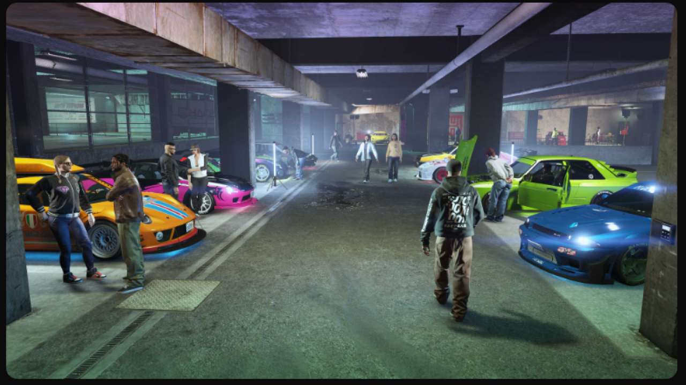

Le GPU sono uno degli elementi chiave che permettono il successo
dei videogiochi moderni. Senza di esse, i giochi non potrebbero
raggiungere il livello di realismo e fluidità che conosciamo
oggi. Le GPU influenzano vari aspetti del gioco, inclusi:
-
Renderizzazione dei Grafici: Le GPU sono
essenziali per creare immagini 3D complesse, texture
realistiche e ambienti dinamici.
-
Frame Rate Elevato: Una GPU potente
consente di mantenere un frame rate elevato, che è cruciale
per un'esperienza di gioco fluida.
-
Ray Tracing e Illuminazione Realistica: Le
moderne GPU supportano tecniche avanzate come il ray tracing
per ottenere ombre e riflessi realistici.
-
VR (Virtual Reality): Le GPU sono
essenziali per supportare la realtà virtuale, garantendo
un'esperienza immersiva e coinvolgente.
Con l'avanzamento delle tecnologie, le GPU sono diventate il
cuore pulsante dei videogiochi moderni, in grado di gestire
compiti complessi come il rendering di ambienti 3D, il ray
tracing e l'intelligenza artificiale, offrendo esperienze di
gioco mai viste prima.